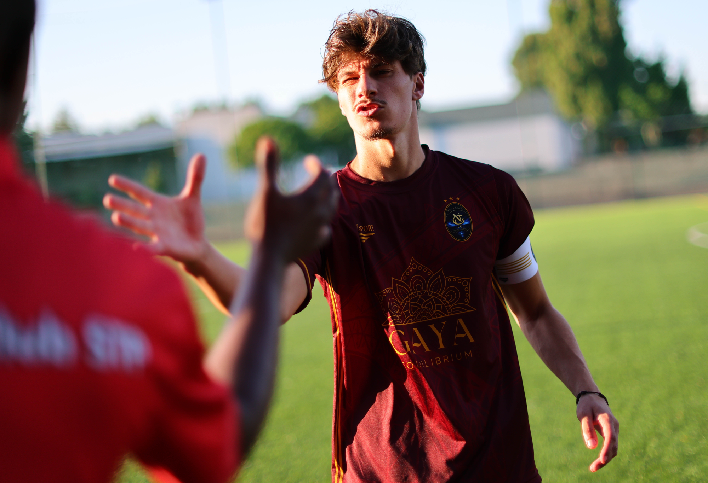
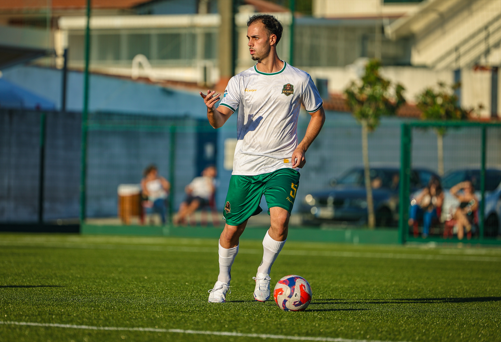

SOCCA’s seven-a-side football competition returned to Porto on 20 September 2026 for the opening matchday. Image Media’s coverage follows the occasion both on the pitch and at the touchline, where team discussions and exchanges between players form another part of the matchday story.
The official Liga 1 Porto calendar lists three completed fixtures at Academia da Bola that Sunday. Kultime FC beat Elite Gaia 8–5 in the 17:00 match, French Connection defeated Squadra Nerazzurra 5–2 at 18:00, and Al Narsa recorded a 6–0 win over Cultural dos Guindais at 19:00.
An opening round in three photographs
Nick Meines’s opening image captures a group of players in blue, yellow and white gathered beside the pitch. The scene places the collective side of seven-a-side football at the centre of the report: a team listening, talking and preparing together.

Lucas Menezes turns the focus to a player wearing a captain’s armband, reaching towards another player in the afternoon light. Paulo Noleto’s photograph returns to the ball, with a player in white and green looking across the pitch. Together, the three images record the communication and concentration around the opening round.

Image Media coverage
Reporting: IM News Editorial Desk
Coverage team: Liane Ferreira, Nick Meines, Lucas Menezes, Fran Paulino and Paulo Nômade / Image Media
Liga 1 Porto match details and scores checked against SOCCA Portugal’s official competition calendar.